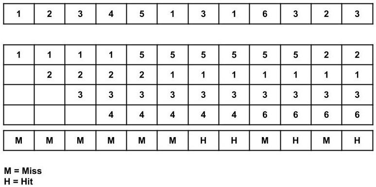

In this project I designed a paging algorithm which decides what pages to keep in memory frames. The best implementation of this I was able to do was by using the program counter to determine program type and only page in the needed pages for the program detected.
In this project I worked on a team to implement navigation on the misty ii platform as well as various sensors and UI elements.
In this project I developed an inverted Pendulum game on the pearl gecko using an RTOS.